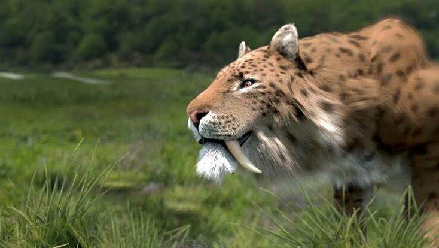

El Dientes de Sable
🐯 Tigre dientes de sable (Smilodon fatalis)
🌍 Hábitat y distribución
Vivió en América del Norte y del Sur, principalmente durante el Pleistoceno (entre 2,5 millones y 10.000 años atrás). Habitaba en zonas abiertas, como praderas, sabanas y bosques bajos, donde podía cazar grandes mamíferos.
💪 Características físicas
🍖 Alimentación
Era un carnívoro cazador especializado en animales grandes, como: Bisontes, Caballos prehistóricos, Perezosos gigantes, Crías de mamut, Atacaba con emboscadas: se acercaba sigilosamente y, con la fuerza de sus patas, derribaba a la presa para clavarle los colmillos en el cuello o garganta.
🧠 Comportamiento
Aunque no se sabe con certeza, los restos fósiles sugieren que podía vivir en grupos o manadas, lo que facilitaba la caza y el cuidado de crías o heridos.
⚰️ Extinción
El tigre dientes de sable se extinguió hace unos 10.000 años, al final de la última Edad de Hielo. Las causas más probables fueron:Desaparición de sus presas grandes por el cambio climático, Competencia con otros depredadores como lobos y humanos, Caza humana, directa o indirecta, que redujo sus fuentes de alimento
🧬 Importancia científica
Es uno de los fósiles más abundantes encontrados en los yacimientos de La Brea (California), donde el alquitrán conservó miles de huesos. su estudio ha ayudado a entender la evolución y extinción de los grandes carnívoros del Pleistoceno.
🏛️ Curiosidades
El nombre Smilodon significa “diente cuchillo”. Aunque se le llama “tigre”, no era un verdadero tigre, sino un felino diferente, más cercano a los gatos modernos. Sus colmillos eran frágiles: no podía morder huesos, solo carne blanda. Aparece frecuentemente en documentales y películas de prehistoria por su aspecto impresionante